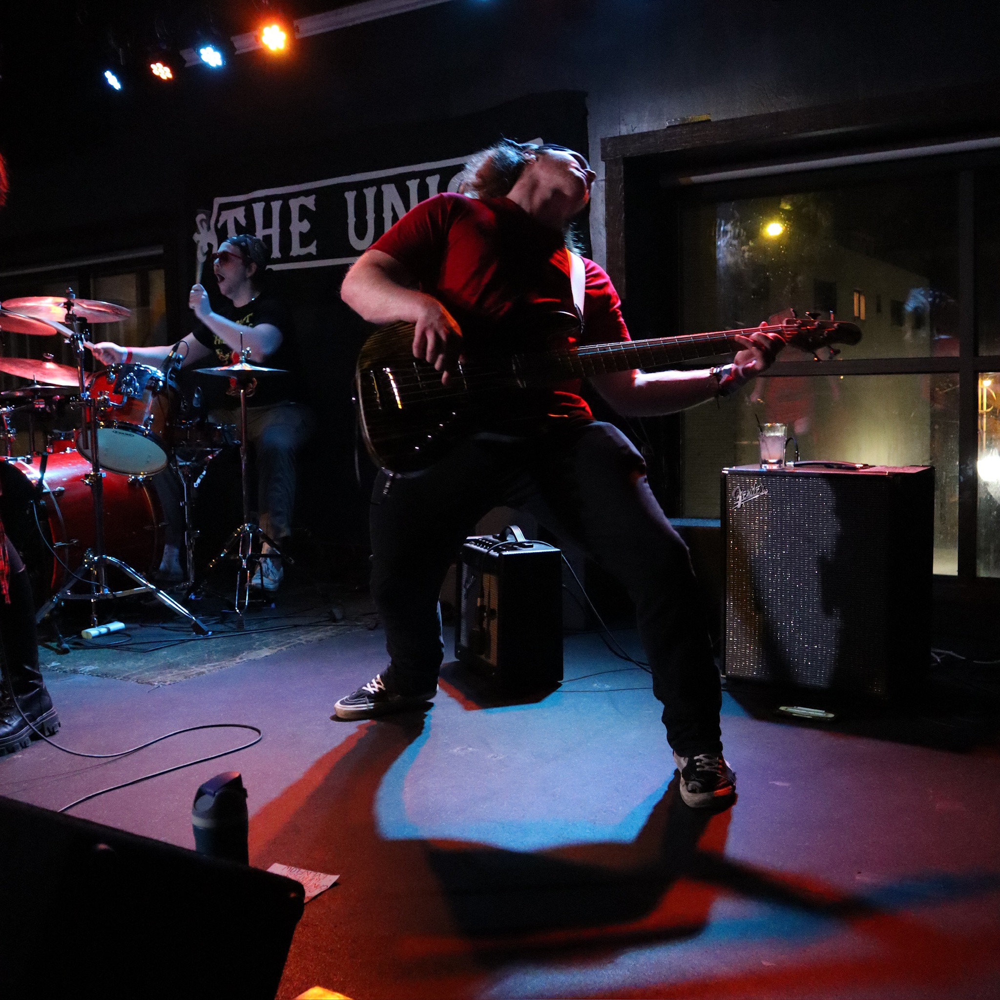
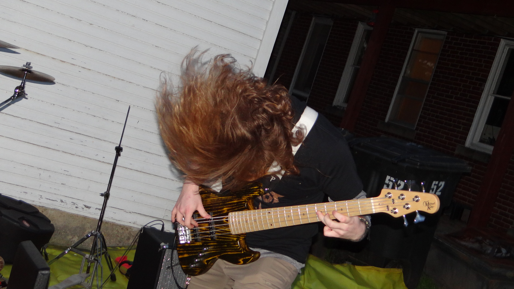
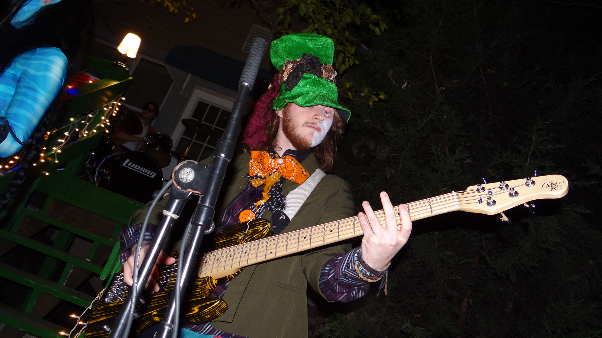
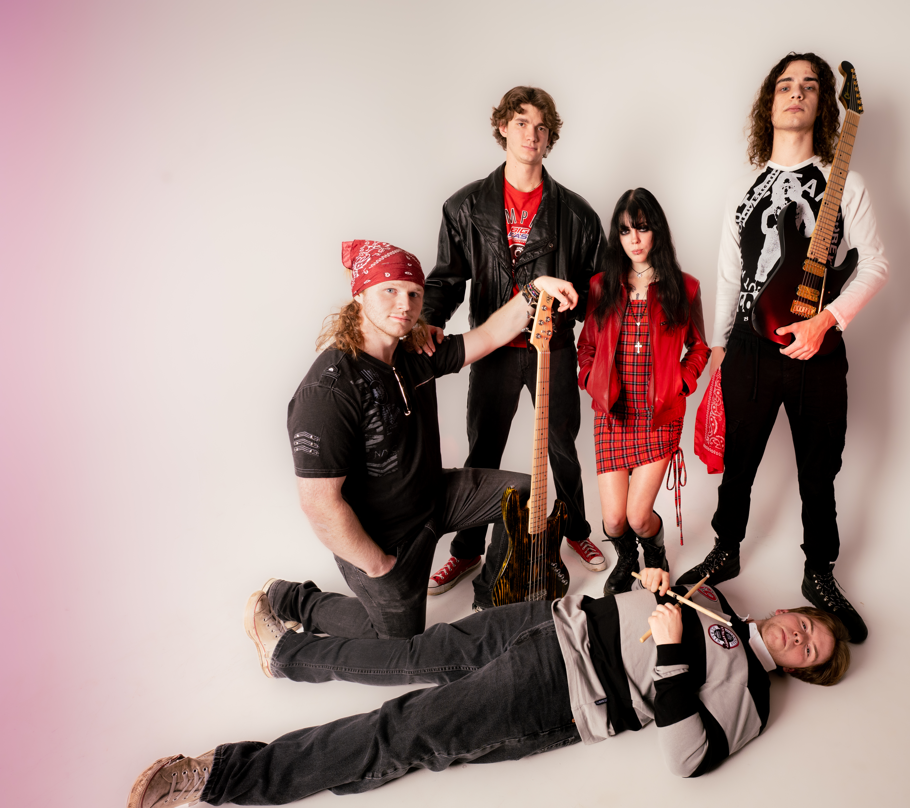
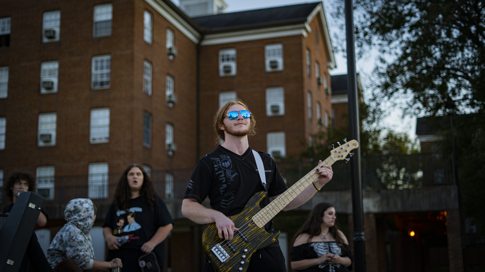
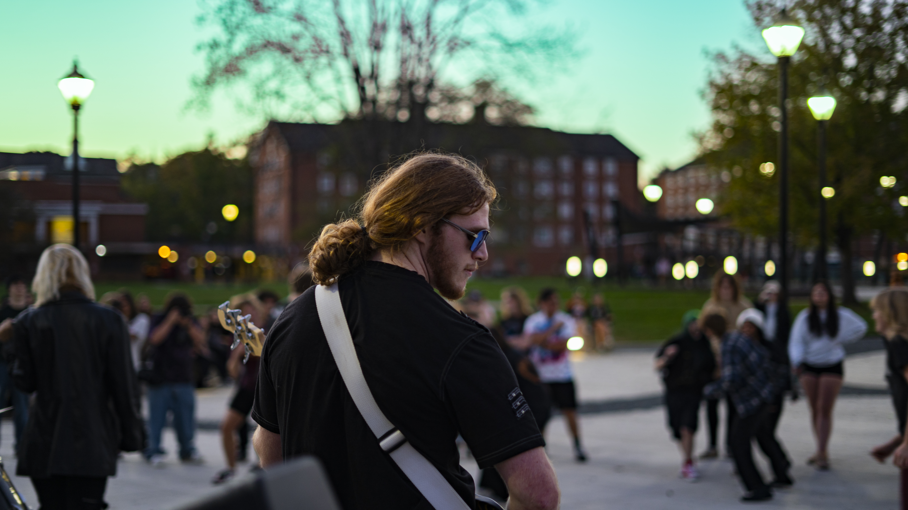
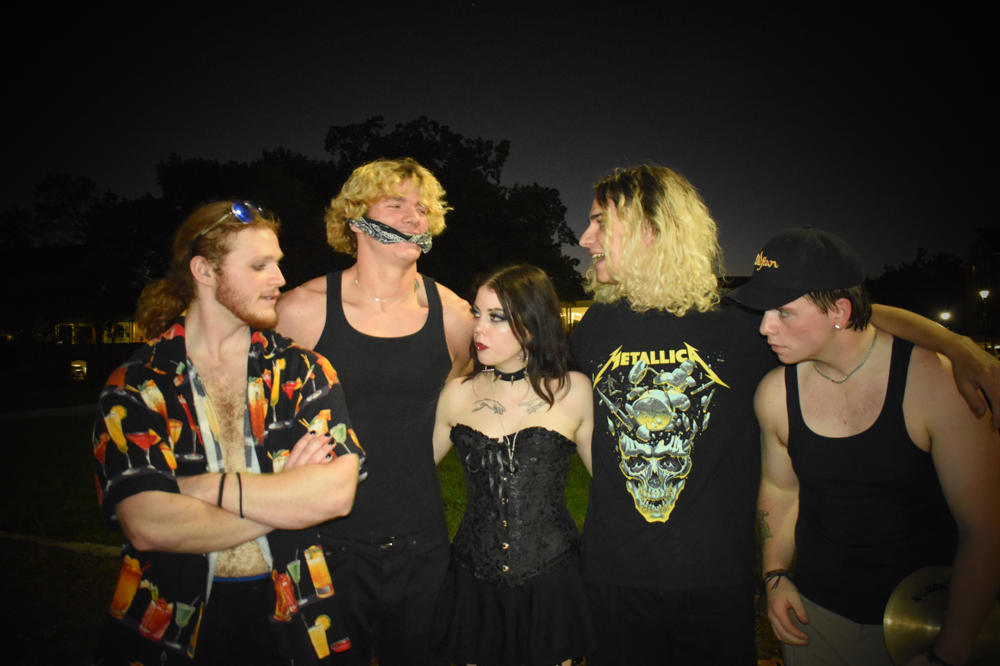

Rock / Alternative · Full recreation · All instruments performed or programmed by JPGee
Full re-creation of "Paralyzer" by Finger Eleven, built entirely from scratch. I am not a vocalist, so this project focuses on
arrangement, tone, and performance: drums, bass, guitars, and all production elements were played or programmed by me.
This project showcases my ear for detail, guitar and bass tone, and my ability to work inside established genres while still bringing my own feel.
Selected Projects
Carriage Hill & Growing Pains – Client Album (In Progress)
Singer-songwriter · Production, arrangement, and concept demos
Working closely with an artist to take raw singer-songwriter voice memos into fully realized concept demos. In a few sessions, we
moved from basic ideas to structured songs with arrangement, instrumentation, and a clear production direction for a 7–8 song project.
Carriage Hill – Concept Demo
Growing Pains – Concept Demo
Album in a Day – 10 Songs in 12 Hours
Collaborative project · Writing, performance, and production under tight constraints
A full album created in a single day: 10 songs in roughly 12 hours, including lyrics, vocals, and instrumentals. I focused on the
tracks "Launch," "Dragons," and "Paul's Gon Down to Nashville," contributing writing, performance, and production while keeping
the process light, creative, and efficient.
Video overview of the process:
"Launch" – Track from Album in a Day
Girl Idiot – Band Demos
Indie / Rock · Demo production from voice notes
For my band Girl Idiot, I took rough voice memo ideas and turned them into full instrumental demos ready for studio recording or
in-house production. The focus was on capturing the band's energy while giving us clear arrangements to build from.
Solo artist · Bass-forward songs and production experiments
Ongoing solo work under JPGEE, focused on improving my production chops, bass and guitar work, and content creation workflow.
These tracks span rock, funk, and experimental sounds, and feed directly into my collaboration skills with other artists.
Photo Gallery
Click any image to view it larger, or use the arrows to cycle through.







Music Resume
Show / hide detailed resume
This resume focuses only on music-related experience. Non-music day jobs have been intentionally omitted.
Summary
Multi-instrumentalist (with a focus on funk bass) and producer working across rock, grunge, jazz, and metal. Comfortable taking
projects from rough ideas or voice memos to fully produced demos and finished tracks. Strong collaborator with a detail-oriented,
systems-minded approach to both studio work and content creation.